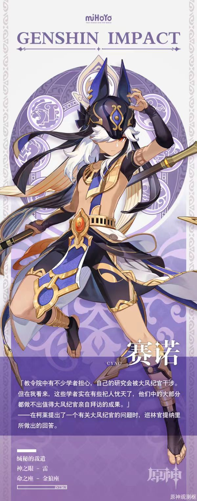

看完冷笑话解析之后还是没看懂？没关系，我们这里有补充的各种梗的解说！
申明：出场的所有冷笑话好笑程度排名不分先后。我们对任何人的笑点、任何人喜欢的文化都保持尊重。
如果您感受到冒犯，我们在这里道歉。
4.赛诺和艾尔海森打架，谁能把他们分开？诺艾尔。因为赛/诺艾尔/海森
有关的潮流梗知识：
赛诺：米哈游游戏《原神》中的角色，须弥的大风纪官，（尤其钟爱冷笑话）。他以维护教令院风纪为己任，威名远扬，令学者们敬畏三分。

艾尔海森：同样来自《原神》，是须弥教令院“知论派”的学者，担任书记官。他性格谨慎毒舌，追求研究自主性，对神明知识抱有浓厚兴趣，曾展开对神明罐装知识的调查。
诺艾尔：游戏《原神》中的四星岩系角色，身为西风骑士团的女仆，她心怀骑士梦想，忠诚善良，总是全力以赴地完成各项任务。她擅长使用双手剑，不仅防御出色，还能通过重剑挥舞造成可观的岩元素伤害，为队友提供护盾和治疗。
10.v家有多少兵力？一个连。一个普通连还是加强连？一个镜音连。
有关的潮流梗知识：
V家是VOCALOID家族的简称，由VOCALOID中声库的人设组成的虚拟团体，主要成员有初音未来、镜音双子（镜音铃和镜音连）、洛天依等。
VOCALOID是日本乐器制造商Yamaha推出的电子音乐制作语音合成软件，通过输入音调和歌词，可以合成出类似人类的声音。
镜音连（Kagamine Len）是V家中的一位虚拟歌手，由Crypton Future Media开发，与镜音铃一同发售，是角色主唱系列的第二作。
镜音连拥有铿锵有力的青春期少年的歌声，代表物是香蕉，代表色是明黄色。他的同人设定多样，常被描绘为傲娇、腹黑、温柔等性格。
镜音连擅长演唱摇滚、舞曲、歌谣曲、演歌系流行曲等多种曲风，是VOCALOID家族中备受喜爱的角色之一。
11.如果鹿乃在森林迷了路，会变成麋鹿。
有关的潮流梗知识：
鹿乃是日本歌手、词曲家及Vtuber，以翻唱动画歌曲在Niconico上成名，后转为商业歌手，发行多张单曲和专辑。
她不仅拥有甜美的嗓音和出色的演唱技巧，还亲自参与词曲创作，展现了她的音乐才华。
此外，鹿乃还活跃于虚拟主播领域，以可爱的形象和亲切的互动赢得了众多粉丝的喜爱。
13.诸葛亮对风说你快点向西刮。东风：我不像西瓜，你像个傻瓜。
有关的潮流梗知识：
诸葛亮，字孔明，三国时期蜀汉丞相，杰出政治家、军事家、文学家、书法家、发明家。他鞠躬尽瘁、死而后已，以智慧和忠诚著称，如草船借箭、空城计等事迹广为流传，被誉为“卧龙先生”，对后世影响深远。
三国时，赤壁大战前夕，诸葛亮预测到将有东风，于是向周瑜提出火攻曹军之计，并借来东风助战，最终利用东风和火攻大败曹军，此战成为以弱胜强的经典战役，
14.昨天我去买东西对老板砍价。老板说这是底价（迪迦奥特曼）。然后他就变成了光。
有关的潮流梗知识：
迪迦奥特曼是《迪迦奥特曼》特摄剧的主角，原为超古代黑暗巨人，后转为光之巨人。（即变成光的来源）
他具有复合型、强力型、空中型三种形态，实力强大，由人间体圆大古唤醒，为守护地球而战。
15.狄仁杰对她老婆说，我想把名字中间的仁去掉。老婆问：为什么？狄仁杰说：啊，如果我是dj你会爱我吗？
有关的潮流梗知识：
狄仁杰是唐朝时期的政治家、武周宰相，以刚直不阿、知人善任著称。他一生政绩颇丰，不畏权势，直言力谏，成为一代名相，被朝野公认为“唐祚送俊之臣”。
16.今天胃不舒服去看医生，医生说给你的胃做个b超吧，这时候我的胃突然说话了:首先我不叫胃，我叫楚雨荨。
有关的潮流梗知识：
“我不叫喂，我叫楚雨荨”来源于电视剧《一起来看流星雨》中楚雨荨的经典台词。楚雨荨因被捉弄而气愤地说出这句话，后来意外走红，逐渐变成流行梗文化的一部分。
19.在哪里能够找到最多的乌鸦和太鼓呢？在bilibili。因为佛狸祠下，一片神鸦社鼓。佛狸与哔哩谐音，令人忍俊不禁
有关的潮流梗知识：
“佛狸祠下，一片神鸦社鼓”出自辛弃疾的《永遇乐·京口北固亭怀古》，描绘了佛狸祠（拓跋焘行宫旧址）香火旺盛，
乌鸦啄食祭品、百姓擂鼓祭祀的场景，表达了词人对沦陷区百姓安于异族统治的痛心，以及对南宋统治者收复失地的迫切期望。
bilibili（简称B站）是中国最大的弹幕视频网站和线上宅文化社区，创立于2009年6月。它提供ACG（动画、漫画、游戏）等内容，并拥有独特的弹幕系统。
B站还拓展了直播、电商、游戏等业务，成为年轻人潮流文化娱乐社区。
22.知道女娲补天的材料是什么吗？是强扭的瓜。因为强扭的瓜不甜（补天）。
有关的潮流梗知识：
女娲补天是中国古代神话故事，讲述远古时期天塌地裂，女娲炼五色石补天，斩龟足撑四极，平洪水杀猛兽，
使天地恢复宁静，人类重新过上安乐生活。该故事体现了中华民族对自然灾难的抗争精神和对和谐社会的向往。
28为什么彼得帕克的衬衣这么多褶皱？因为他没有电熨斗，老兄。（Why is Peter Parker's jacket so wrinkly? Because he dosen't have an iron man.）
有关的潮流梗知识：
蜘蛛侠和钢铁侠都是美国漫威漫画旗下的超级英雄，但两者背景、能力和故事线有所不同。
蜘蛛侠本名彼得·本杰明·帕克，原本是一名普通的大学生，因被放射性感染的蜘蛛咬伤而获得超能力。
他具有强大的耐力、敏捷的反应和速度，并发明了蛛网发射器，从此化身蜘蛛侠守卫纽约。
蜘蛛侠以其独特的蜘蛛能力和正义感赢得了广大读者的喜爱。
钢铁侠则全名安东尼·爱德华·托尼·斯塔克，是斯塔克工业的CEO。
他因一场阴谋绑架而生命垂危，为了挽救自己的性命，制造了方舟反应炉和装甲，从而成为了钢铁侠。
他凭借智慧和先进的科技装备，成为了复仇者联盟的重要成员。
在电影宇宙中，蜘蛛侠和钢铁侠之间有着深厚的关系。钢铁侠不仅是蜘蛛侠的导师和朋友，还在某种程度上扮演了父亲的角色。
他们共同面对过许多挑战和敌人，成为了彼此不可或缺的伙伴。
在《复仇者联盟3：无限战争》里，蜘蛛侠和钢铁侠并肩作战，对抗灭霸的军队。在激烈的战斗中，蜘蛛侠一度身处险境，甚至面临生命危险。
虽然最终他得以幸存，但这次经历无疑让他深刻体会到了与钢铁侠并肩作战的珍贵和与钢铁侠生死相依的紧张感。
返回上一页面